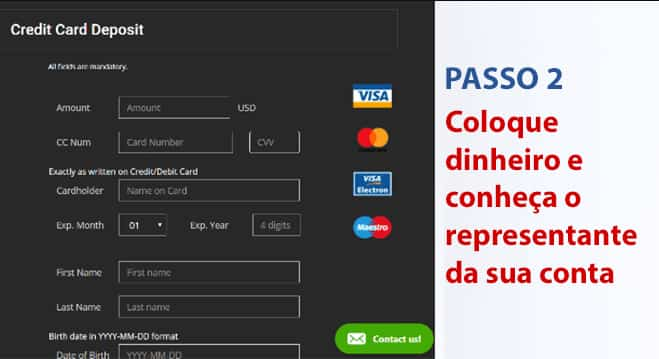
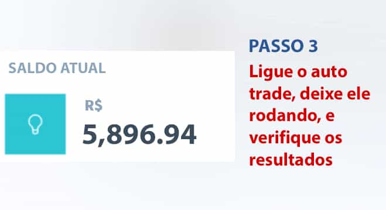

INFORME ESPECIAL: Últimos Investimentos de Antonio Andrade deixam Experts Boquiabertos e Grandes Bancos Assustados
Cidadãos brasileiros estão coletando milhões de riais ao usar essa “brecha de riqueza” – mas isso é legal?


O jornalista de TV brasileiro Antonio Andrade ficou famoso por ser rude e direto, sem se importar com ser honesto a respeito de como ele ganha dinheiro.
Na semana passada, ele apareceu na BCM e anunciou uma nova “brecha de riqueza” que diz que pode transformar qualquer um em milionário em 3-4 meses. Antonio incentiva que todos os brasileiros entrem nessa incrível oportunidade antes de que grandes bancos acabem com isso de uma vez por todas.
E minutos depois de sua entrevista, o Itaú pediu para que a entrevista com o Antonio não fosse ao ar, mas já era tarde demais.
Isso é o que aconteceu:
Bianca Santos, apresentadora da BCM, convidou o Antonio para o show para que ele compartilhasse dicas de como construir um patrimônio, e o Apresentador soltou a bomba:
“O que me trouxe sucesso foi ter pulado em novas oportunidades rapidamente – sem nenhuma hesitação. E agora, minha maneira número um de se fazer dinheiro é um novo programa que negocia criptomoedas automaticamente chamado Immediate Edge. É a melhor oportunidade que já vi em toda minha vida que pode construir fortunas de maneira rápida. Espero que todos olhem isso antes que os bancos terminem com isso.”
A apresentadora da BCM, Bianca Santos, ficou chocada quando Antonio puxou seu telefone e mostrou aos telespectadores quanto dinheiro ele estava fazendo através desse programa gerador de dinheiro que todos no Brasil estavam falando.

Antonio: Aqui está meu relatório sobre o último investimento nos últimos 10 dias.
| Data | Meu investimento (R$) |
lucro Immediate Edge (R$)
|
Balanço (R$) |
|---|---|---|---|
| 10.04.2022 |
1,300
|
+ 3,800.00 | 6,960.00 |
| 11.04.2022 |
2,300
|
+ 14,881.45 | 21,841.45 |
| 12.04.2022 |
1,090
|
-400 | 21,201.45 |
| 13.04.2022 |
5,900
|
+23,589.01 | 44,790.46 |
| 14.04.2022 |
4,300
|
-200.00 | 39,590.46 |
| 15.04.2022 |
1,900
|
-940.00 | 38,650.46 |
| 16.04.2022 |
1,300
|
+6,800.00 | 32.911,52 |
| 17.04.2022 |
1,300
|
+2,640.00 | 45,450.46 |
| 18.04.2022 |
2,700
|
+10,280.00 | 48,090.46 |
| 19.04.2022 |
10,000
|
+24,489.34 | 58,370.46 |
Para ser justo com a experiência, comecei com um investimento mínimo de R$ 1.300 em bitcoin 09.04.2022 . Como você pode ver, Houve alguns dias ruins, mas eventualmente até 19.04.2022 eu tinha coberto tudo e ganho R$ 58.370,46 de lucro líquido. Mas as projeções de hoje dizem que você pode ganhar muito mais.
O segmento ficou sem tempo antes que Antonio pudesse elaborar mais, então, conseguimos uma entrevista com ele mesmo para aprender mais sobre essa oportunidade polêmica.
ENTREVISTA EXCLUSIVA COM Antonio Andrade
“Você já deve ter ouvido sobre a nova plataforma de investimentos em criptomoedas chamada Immediate Edge, que está ajudando pessoas normais na América do Sul, Austrália, Ásia e América do Norte a construírem fortunas de um dia para outro. Você pode estar cético porque parece bom demais para ser verdade.”
Antonio continua:
“Eu entendo, já que pensava a mesma coisa quando um amigo meu de confiança me contou. Mas depois de ver com meus próprios olhos o quanto ele estava ganhando, eu tinha que tentar.”
“Estou contente por ter experimentado porque foi o dinheiro mais fácil e rápido que já ganhei. Estou falando sobre dezenas de milhares de reais em um dia no piloto automático. É literalmente a maneira mais rápida de se conseguir uma montanha de dinheiro agora. E isso não vai durar muito mais tempo já que cada vez mais pessoas sabem sobre isso. Ou quando os bancos decidirem desligar o esquema.”
O que exatamente é a Immediate Edge E Como ela FUNCIONA?
A ideia por trás da Immediate Edge é bem direta: Permitir que uma pessoa comum consiga dinheiro no boom das criptomoedas, que ainda é o investimento mais lucrativo do século 21, apesar do que a maioria das pessoas pensam.
Mesmo que o Bitcoin tenha caído do seu pico de US$50.000 por Bitcoin, traders ainda estão lucrando muito. Por quê? Porque existem milhares de outras criptomoedas além do Bitcoin que estão sendo negociadas por grandes lucros diariamente.
Algumas dessas criptomoedas são Doge, Ethereum, Ripple, Monero, Zcash e elas ainda estão dando lucros de mais de 10.000% ou mais para pessoas comuns no Brasil.
A Immediate Edge lhe permite lucrar de todas essas criptomoedas, mesmo em um mercado em queda. Ela usa Inteligência Artificial (IA) para lidar automaticamente com vendas cobertas e descobertas para que você consiga ganhar dinheiro sem parar, mesmo enquanto dorme.
Immediate Edge é financiada por algumas das mentes mais brilhantes no mundo da tecnologia que já existiram.
Esses gênios da tecnologia construíram companhias multibilionárias ao solucionar problemas complexos como pagamento on-line, computação e transporte. Agora, eles estão de olho no problema global de desigualdade econômica, permitindo que qualquer um, não importa se rico ou pobre, ganhe dinheiro o suficiente para aproveitar uma vida feliz e significativa.
ANSWERS TO POPULAR QUESTIONS
QUEM PODE PARTICIPAR DO SISTEMA?
QUAL É O VALOR MÍNIMO DO DEPÓSITO?
COMO POSSO FINANCIAR MINHA CONTA NO Immediate Edge
CUSTOS DE PARTICIPAÇÃO, COMISSÃO
PAGAMENTOS
O segredo de se fazer dinheiro que grandes bancos não querem que você conheça
Antonio continua,
“Estamos passando por tempos econômicos difíceis, e essa é a solução que as pessoas estavam esperando. Nunca na história tivemos uma oportunidade tão incrível da qual pessoas comuns possam tirar vantagem para gerar grandes fortunas em um espaço tão pequeno de tempo.
Algumas pessoas estão hesitando entrar nessa oportunidade por ser muito diferente. E é por isso que grandes bancos estão tentando disfarçar! Os grandes bancos estão ativamente criando propagandas e chamando criptomoedas e plataformas como a Immediate Edge de golpe. Por quê? Eles estão preocupados com que seus grandes lucros encolham quando seus clientes souberem como criar riqueza por si próprios.
A verdade é que as criptomoedas são a revolução de nossas vidas e qualquer um que não entrar nessa oportunidade está perdendo. Eu já recebi ligações tensas e ameaças de grandes corporações financeiras porque eu estou trazendo essa tecnologia ao conhecimento das pessoas. Mas elas que se danem. As pessoas no Brasil já começaram a entender a verdade e é apenas uma questão de tempo antes de que eles também entendam.
Estou compartilhando isso porque também recebi centenas de e-mails de pessoas me agradecendo por compartilhar esse segredo. O meu favorito é desse jovem que comprou o carro dos sonhos ao seu irmão mais novo – uma Ferrari 488 Pista usando o dinheiro que fez com a Immediate Edge. Essa plataforma realmente está melhorando um pouco vida de todos no mundo.”
A Immediate Edge realmente funciona? Nós mesmos a testamos
Nossos editores mais sêniores não nos deixariam publicar a entrevista com o Antonio até que tivessem verificado que a Immediate Edge é uma oportunidade legítima de se fazer dinheiro. Nossa liderança corporativa não queria que lançássemos qualquer informação que pudesse potencialmente causar com que cidadãos Brasileiros perdessem seu dinheiro suado.
Então, nosso time editorial testou a Immediate Edge para ter certeza de que realmente funcionasse como o Antonio descreveu. Um de nossos editores on-line, Gustavo Gaivota, se voluntariou para arriscar seu próprio dinheiro e testar a Immediate Edge.
Gustavo tem 37 anos e é pai de 2 meninos. Sua esposa perdeu seu trabalho no ano passado devido à uma doença. Ele admitiu que estava sofrendo financeiramente e essa oportunidade de investimento poderia ser a resposta.
Relato de Gustavo:
“A primeira vez que ouvi a entrevista com o Antonio, achava que ele estivesse brincando. Fazer dinheiro em casa é apenas um sonho. Eu decidi tentar de qualquer forma devido as minhas condições financeiras e para o bem do bom jornalismo.
Quando eu me cadastrei, assisti um vídeo introdutório sobre a plataforma. O vídeo parecia estar prometendo demais, mas deixei meu ceticismo de lado. Em algumas horas, recebi uma ligação do meu investidor pessoal. Ele respondeu todas as minhas perguntas e tirou todas minhas dúvidas, e me garantiu que eu ganharia dinheiro. Ponto. .
Meu investidor pessoal até me prometeu que se eu perdesse dinheiro, ele me daria um reembolso dos meus R$ 1.300. Isso mostra o quão confiante ele estava de que isso mudaria minha vida. Isso sim é um bom serviço ao cliente. Não me surpreende os bancos estarem com medo.
Uma vez que recebi acesso à plataforma, depositei meu investimento inicial de R$ 1.300. Isso é o quanto minha família gastava em comida porcaria, então, paramos de ir em fast food por um mês. Agora podemos ser saudáveis, e quem sabe ricos também..
O sistema da Immediate Edge é uma plataforma de negociação automática de criptomoedas. O software usa algoritmos avançados de AI e Machine Learning para prever exatamente quando uma criptomoeda vai subir ou descer. Daí ela vai automaticamente comprar e vender para você a todo momento. A tecnologia já tornou nossas vidas mais fácil, então, por que não usar para ganhar dinheiro também?”
RRESULTADOS EM TEMPO REAL DE GUSTAVO COM O SISTEMA
“Depois de apenas 1 hora de ter depositado os R$ 1.300, o software começou a tradar para mim. Para ser honesto, eu estava nervoso de que ele perderia todo meu dinheiro. E claro, meu primeiro trade foi uma perda de R$ 120,00!
Eu senti minha garganta fechando. Achei que tivesse sido enganado. Eu estava até mesmo pronto para ligar para meu investidor pessoal e pedir meu dinheiro de volta. Então, me lembrei do que ele disse: O algoritmo está certo 80-89% das vezes. Você não vai ganhar TODA vez, mas você vai ganhar o suficiente e lucrar no geral. .
Então, eu deixei o software continuar a tradar e fiquei de olho. O próximo trade teve lucro! Apenas R$ 89,00, mas já era alguma coisa. Depois, teve um lucro de R$ 326,00. Depois mais R$ 119,00, com um total de lucro de R$ 534,00. E tudo isso em menos de 5 minutos!
Eu logo comecei a ganhar dinheiro sem parar e eu não conseguia acreditar no que estava vendo. Cada vez que eu atualizava a tela, os lucros eram cada vez maiores. Eu achei que estava usando drogas porque isso era bem excitante.
Agora eu sei o porquê do Antonio sempre estar de bom humor. E porque o grandes bancos não querem que pessoas cheguem perto dessa brecha de riqueza. No final do dia, eu tinha ganhado mais de R$ 3247,00 de lucro, nada mal para um investimento inicial de R$ 1.300! Eu estava tão empolgado que mal conseguia dormir.
O dia seguinte era terça-feira e eu tinha que voltar ao trabalho. Para ser honesto (e não conte ao meu chefe), era difícil focar no trabalho sabendo que o software estava fazendo dinheiro.
Eu fui ao banheiro algumas vezes para ver meus lucros, e eles não paravam de crescer (com pequenas perdas de vez em quando). No final do dia, antes de pôr as crianças para dormir, minha conta mostrava R$ 4.600,00. Isso é mais do que eu ganhava em uma SEMANA no meu trabalho normal!
Até o final da semana, eu tinha ganhado um total de R$ 22.303,00. Eu retirei exatos R$ 20.300,00 e reinvesti o resto. Em 2 dias, eu recebi meu primeiro cheque de exatamente R$ 20.300,00. Eu não conseguia acreditar que estava na vida real!"
Gustavo continua,
“Agora eu estou ganhando de forma consistente R$ 2.000,00 a R$ 3.500,00 por dia graças à Immediate Edge. Agora, o dinheiro é depositado na conta do meu banco a cada poucos dias. Apenas alguns cliques e eu recebo o dinheiro em 24-48 horas. Toda vez que a transferência cai em minha conta, eu tenho de me beliscar para ter certeza de que não estou sonhando.
Por sorte, EU AMO meu trabalho aqui porque eu mostro pessoas importantes nas notícias (como essa) ou eu já teria saído faz tempo. No entanto, eu fiz um plano de viagens para minha família para Bali, Indonésia para celebrar o pagamento das minhas dívidas e finalmente conseguir ajeitar a situação financeira da minha família!
Isso não teria sido possível sem a generosidade do Sr. Antonio por compartilhar seu segredo ao vivo na televisão. E estou feliz de ter arriscado dinheiro na Immediate Edge. Minha esposa está mais feliz do que nunca e minhas filhas cheias de brinquedos.
Meus colegas de trabalho estão se batendo por não terem entrado duas semanas antes como eu fiz. Mas, por fim, todo o escritório se cadastrou (incluindo meu chefe) e eles estão me chamando de herói.”
Como começar com a Immediate Edge (lugares limitados disponíveis)
Para começar, você apenas precisa do seu computador, smartphone ou tablet com acesso à internet. Você não precisa de nenhuma habilidade específica além de saber como usar um computador e usar a internet. Você não precisa de nenhuma experiência tecnológica nem em criptomoedas porque o software e seu investidor pessoal lhe garantem lucro.
Outro benefício desse programa é que você começa quando quiser. Você pode ter sua própria agenda, seja ela 5 horas por semana ou 50 horas por semana. Basta iniciar o software de negociação automática quando quiser e pausar quando quiser (Eu não sei por que você faria isso, mas...).
Para economizar o tempo do nosso leitor e verificar as funcionalidades, criamos um guia de instruções.
Aqui está meu guia passo a passo:
A primeira coisa que você vê é um vídeo mostrando o poder da Immediate Edge . A propaganda é grande e direta ao ponto, mas é um produto Americano e é assim que eles fazem as coisas. De qualquer forma, você simplesmente coloca seu nome e endereço de e-mail próximo ao vídeo para começar na hora.
( Dica: Mesmo que você não decida investir dinheiro, eu lhe recomendo se cadastrar agora porque é gratuito e o cadastro para residentes brasileiros pode acabar a qualquer momento) Immediate Edge
Depois, você precisa colocar dinheiro em sua conta. Quando eu estava navegando pela página de depósitos, meu celular tocou. Era um número internacional, então, eu hesitei em atender, mas depois percebi quem estava ligando.
Sem dúvida que era meu gerente pessoal de conta. Seu serviço foi sensacional. Ele me encaminhou por todo o processo de depósito. Eles aceitam todos os cartões de crédito principais como Visa, MasterCard e American Express. Eu depositei a quantia mínima, que era de R$ 1.300.
„Uma vez com os fundos, naveguei até a aba "Trader Automático" no software, coloquei o valor nos R$ 300,00 recomendados e o habilitei. O software começou a negociar a um ritmo acelerado e eu fiquei preocupado no começo, mas o deixei trabalhar.
“Todos querem ser ricos, mas ninguém sabe como. Bem, a oportunidade de uma vida para você ficar rico está aqui. Ela NÃO vai ficar aqui por muito tempo, então, não a perca.” – Antonio
Atualização
Acabamos de receber notícias que hoje quase todas as vagas já foram preenchidas para cidadãos Brasileiros. Immediate Edge aceita apenas uma quantidade limitada de usuários para que os lucros se mantenham sempre altos. Agora, temos apenas (37) vagas abertas, então, corra e cadastre-se agora para garantir seu lugar
Conselho util
Siga os 3 Simples Passos para Começar:

Passo 2:
Deposite o mínimo de R$ 1.300
Passo 3:
Retire seus lucros para seu banco!
Adicone um comentário